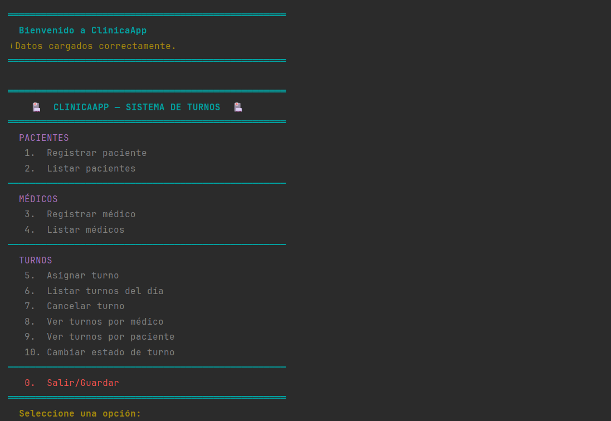

El reto
Construir desde cero un sistema de gestión de turnos médicos en Java puro — sin frameworks — que manejara pacientes, médicos y turnos en memoria, con persistencia automática en archivos CSV entre ejecuciones.
Mi rol
Diseñé e implementé las clases del modelo (Paciente, Medico, Turno), las interfaces Registrable y Consultable, y la lógica de negocio en ClinicaService — validaciones, detección de duplicados y conflictos de agenda incluidos.
Lo más destacado
Aplicar los cuatro pilares de la POO en un sistema real con restricciones de tiempo. El mayor aprendizaje: entender por qué equals() importa — sin sobrescribirlo, Java comparaba direcciones de memoria y los duplicados pasaban sin detectarse.
Java
POO
Consola
Interfaces
Enums
Git
